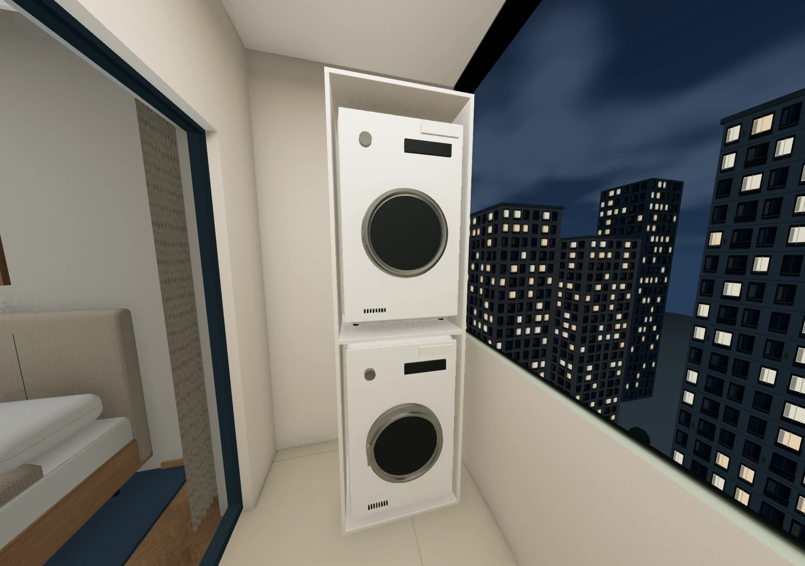
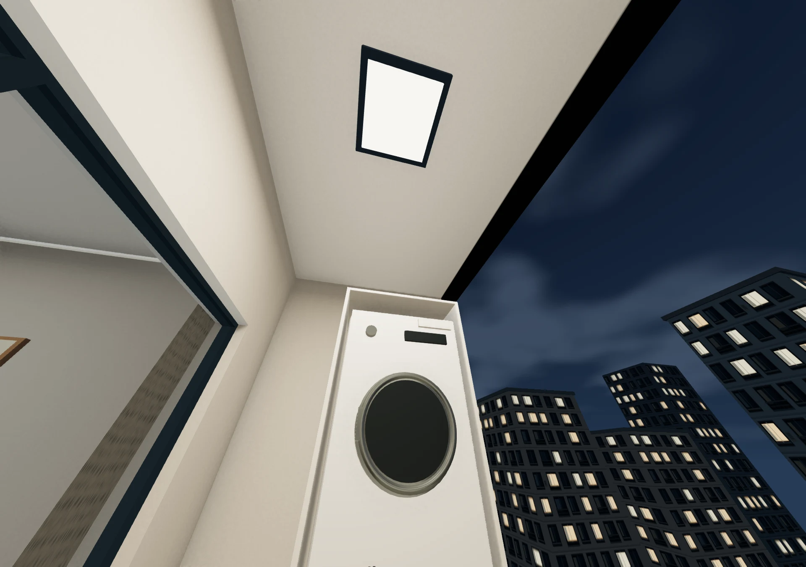
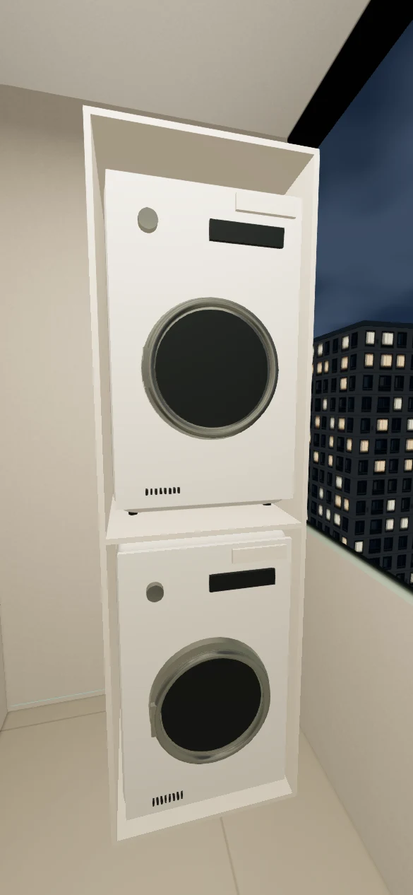
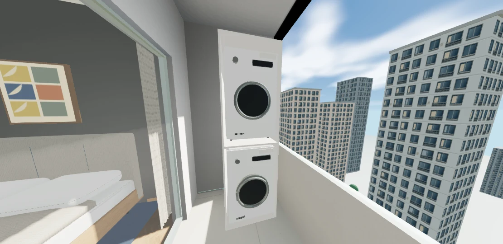
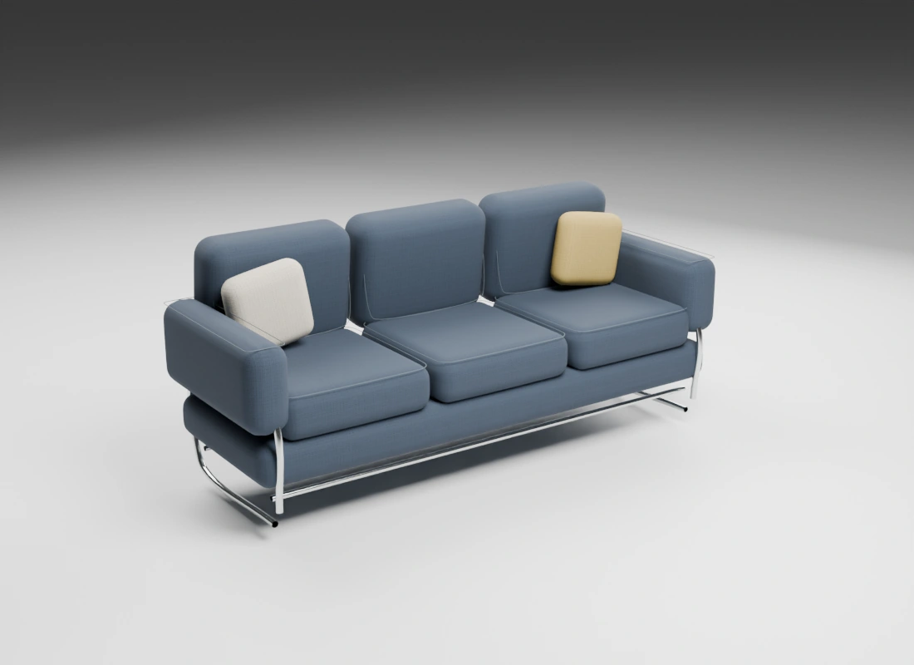
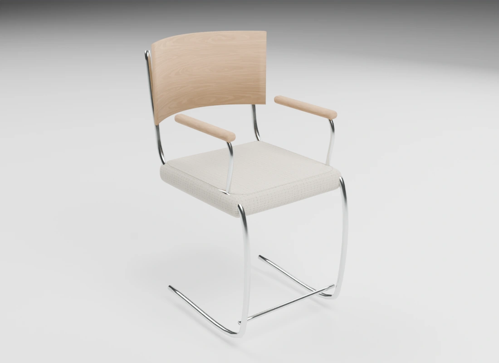
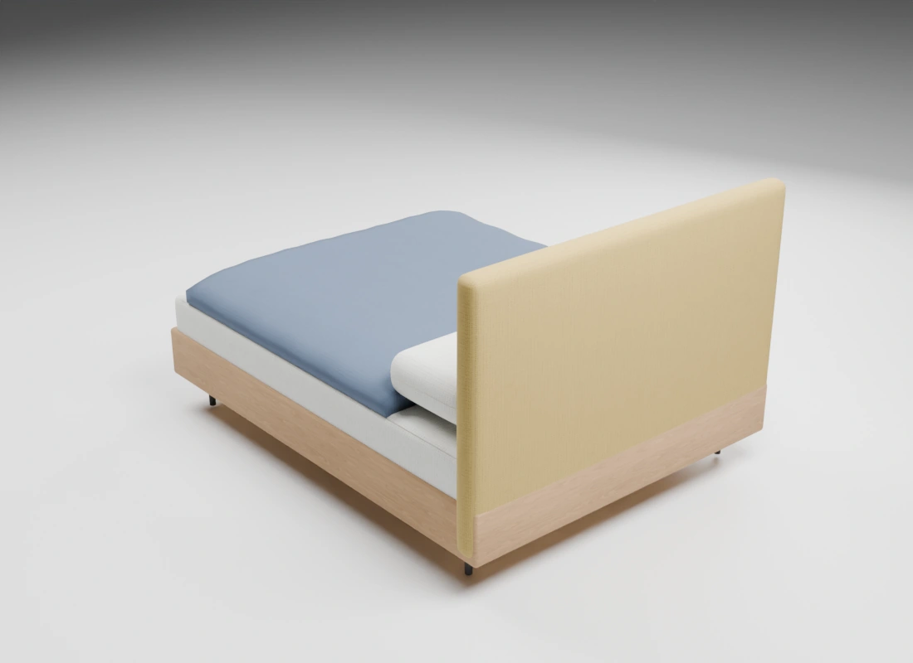
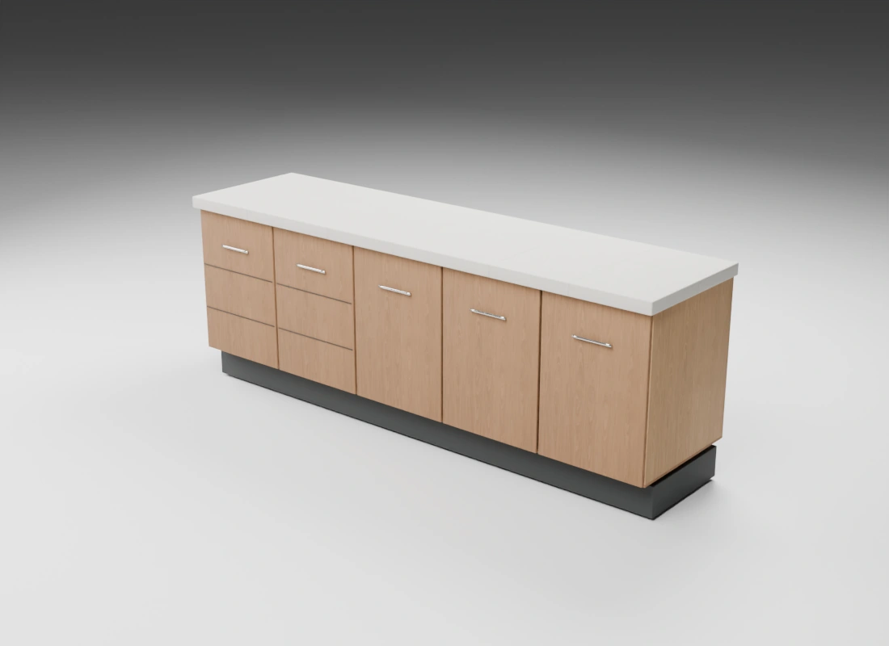

家装 A · 材质与模型重建
main · V16.2 合并效果验证画质重建与接缝修复已合入 main，后续在主干开发。本版将 V16.1 家装 A 资产与主干阳台顶板、顶灯及配套烘焙组合，按桌面、手机视口与微信 UA 重新验证。
主干合并 · 阳台与灯光保留验证
主模板冲突按功能组合处理：保留主干完整阳台屋顶、顶灯、屋顶贴图坐标、天花板设置与烘焙快照；接入画质分支家具、PBR 和接缝修复。建筑 / 门洞及家具位置保持。下方为合并后的真实网页画布，桌面和手机竖 / 横屏均重新采集。




V16.1 · 漏边漏缝修复近检
重建旋转件轴心与吊灯内壁，封闭并焊接管件端口；被褥改为与床垫接触的连续厚壳；水槽盆沿覆盖开孔，橱柜侧板与台面完成收口。软包缝线贴合实际曲面，并闭合沙发连续管架。所有材质共用同一位置量化网格，避免材质边界产生微缝。
以下是同一网页内嵌模型在固定中性灯光下的 WebGL1 近检。左侧为 V16，右侧为 main V16.2；PC 使用 high，手机使用 mobile 几何与 512px 贴图。它们是模型检查图，与下方实际房间灯光截图分开；未用图片修补几何。
使用下方 PC / 手机切换也会同步此处。逐部件拓扑与装配检查 · 机位与近检采集记录
实际网页 · 合并前后同机位对比
下方均为网页 WebGL 画布截图。PC 与手机视口各 6 组：客厅昼夜、主卧、毛坯、餐厅和厨房。相机、眼高、FOV 和灯光状态一致；未重绘或补光。默认比较 V16.1 分支与合并后 main，也可切换到最初 V14.2 基线。
独立模型检查 · 离线 Cycles 棚拍
以下使用同一个 Blender 源模型、UV 与 PBR 材质在独立软箱光环境中渲染，用于检查曲面、倒角、缝线和构造。它们不是网页效果图或手机截图，不能替代上方实时场景。




资产预算
| 资产 | PC 三角形 | 手机三角形 | 材质组 |
|---|
本机短时观测
Windows + Chrome / RTX 5080 上采样，手机列只是触控 / 微信 UA 视口模拟，受约 30 FPS 限制；PC 受约 60 FPS 限制。数据不能推断真实手机性能提升。启动时间包含本机服务、脚本、纹理和首次构造，单次样本不作速度结论。
| 设备 / 场景 | 原版 FPS | 重建 FPS | 画布 前 → 后 |
|---|
已通过的检查
- WebGL1 高 / 手机 LOD 的逐部件封闭性、绕序 / 法线、退化面、装配净距和资源加载检查。
- 主干含阳台的 219 张建筑烘焙全部加载；13 张 PBR 驻留图，重复数据共享。
- 建筑快照相同、屋顶 0 缺口，门闭合 / 扫掠和家具净空通过。
- 柜背 / 床头贴墙、床三侧通行、原安全观景位置和设置保存回归。
- Chromium / Windows WebKit、微信 UA、横竖屏及缺 HDR / depth 回退。
工业级目标的剩余验收
- 逐房间按原 A 参考图进行视觉评审，避免只按资产数量判断效果。
- 全屋自然光 / 夜间光照仍需进一步标定；完整 Cycles GI 尚未接入网页。
- 房门、窗框、储藏架和洗烘沿用已有细化模型，未全部替换为 Blender 新资产。
- 真实 iPhone / Android 微信的清晰度、发热、连续 10 分钟性能。
- 资源体积增加，需要结合真实网络和手机设备确认加载预算。
源文件与许可
原始参考图与结构数据保持。家具源文件为 assets/rebuild/reference-a-master.blend，材质来自 Poly Haven CC0 的木饰面、织物、人字拼地板与石材；仓库保存原始来源和 SHA256。构建检查资产生成脚本哈希，避免修改源文件后误用过期导出资源。主应用保持单 HTML，运行时无 CDN 或外部资产请求。
查看资产源文件与预算 · 当前 main 公网验证 · 资产与实际渲染检查 · 家具 / 门 / 保存回归 · 引擎与手机视口检查 · 昼夜与扩展回退 · 原版采样 / 重建采样